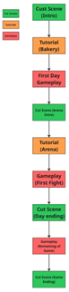

Story premise and narrative structure
You run a bakery by day, and an illegal underground mech arena by night. Baking living bread machines that fight to promote your brand and bakery. Success brings fame, profit, and a dangerous heat that can burn everything you built.
For generations, your Nonna and a scattered lineage of bakers have carried a rare inheritance: the Gift of Animation. It was never simply magic. It was communal magic. Their ancestors discovered that dough remembers hands, that bread holds warmth, that something made with intention carries more than flavor. In small villages long ago, the bakers learned that when a community gathered — kneading together, singing together, sharing together — their creations stirred with life.
But power rooted in community draws attention. When governments discovered that these bakers could animate matter, they tried to regulate it, weaponize it, claim it. Some bakers were conscripted. Others disappeared. So the lineage scattered.
Your Nonna fled with her young daughter, carrying little more than recipes and the memory of how it felt when a village laughed at a dancing loaf. They immigrated to New York and built something small but sturdy: a bakery. The magic went quiet. Not gone — just folded inward. Survival first. Legacy later.
They began again in whispers. A broom finishing a sweep on its own. A mixing spoon circling the bowl while no one touched it. Then came the helpers — little doughlings with knobby arms and determined expressions, never meant to last. By morning they would stiffen, crumble, and return to the bin. But for a few warm hours, they worked tirelessly and defended the bakery with heroic squeaks.
The older bakers started building larger constructs — not to serve, but to be seen. The first construct was too ambitious. It trembled under the weight of so many watching hands. And your Nonna did what she had always done: she stepped forward. She pressed her hands into the warm crust and spoke to it the way she had spoken to every helper before it. Not as a weapon. Not as a tool. But as something alive.
The dough steadied. It did not move for her. It moved with her. That was the night the arena was born.
Thus was born the Dough Brawl Arena — an illegal underground bread golem fighting ring fueled by community, music, sweat, and flour in the air like holy dust. Your Nonna — known as Il Mattarello, "The Rolling Pin" — has held the championship belt for years. Not because her golems are the largest. But because they listen.
The game follows a Linear Experience with Linear Gameplay. Cutscenes will happen throughout the first day of gameplay but will not be present until the player reaches the end game. There is the opportunity to add cutscenes throughout gameplay later to give the player more narrative beyond environmental details, but this will not be within scope initially. If it becomes feasible, it will be implemented.
